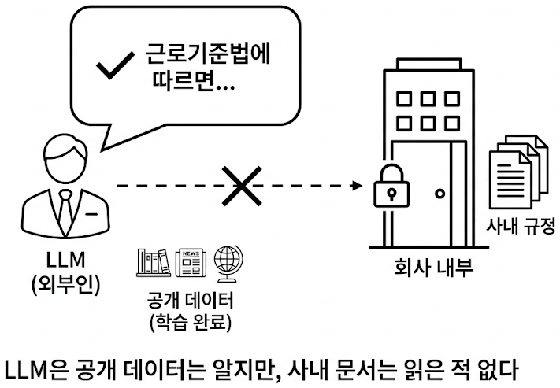
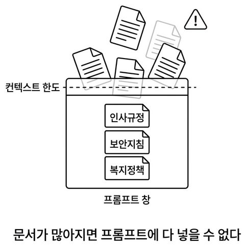
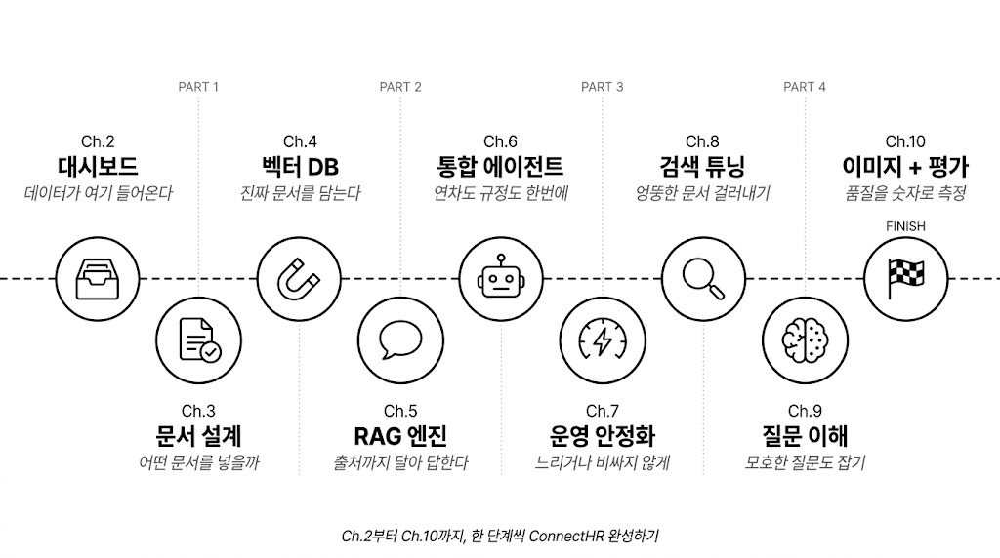

챕터 1. AI한테 물어봤더니 거짓말을 합니다. 환각과 RAG
이번 챕터가 끝나면
- LLM이 모르는 것을 자신 있게 지어낸다는 걸 직접 확인합니다 (환각)
- 문서를 직접 건네주면 거짓말을 멈춘다는 걸 배웁니다 (Context Injection)
- 이걸 자동화한 RAG 파이프라인을 직접 만들어 보겠습니다 (RAG)
챕터 1은 맛보기 챕터입니다
이 챕터는 본격 여정에 들어가기 전 RAG의 원리만 빠르게 체험하는 시간입니다. 더미 데이터 3건으로 "환각 → 문서 주입 → RAG"가 어떤 흐름인지 몸으로 느끼는 것이 목적입니다. 실제 사내 AI 비서 커넥트HR 에이전트를 만드는 본격 여정은 챕터 2부터 시작됩니다. 지금은 가볍게 훑는다는 기분으로 따라오세요.
준비하기. 실습 시작 전 한 번만 설정
1. 소스 코드 준비
이 책의 실습은 GitHub 레포를 클론해서 진행합니다.
| 레포 | 용도 | 주소 |
|---|---|---|
| rag-start | 실습용 (빈 파일) | github.com/metacoding-18-ai-applied-v4/rag-start |
| rag-end | 완성 코드 (참고) | github.com/metacoding-18-ai-applied-v4/rag-end |
아직 클론하지 않았다면 터미널에서 실행합니다.
파일 구조는 이렇습니다.
컨텍스트, 청킹, Chain-of-Thought 같은 단어가 낯설어도 괜찮습니다. 파일 이름에 미리 등장한 것이고, 각 실습에서 하나씩 풀어 설명합니다.
[실습] 파일에는 import와 데이터가 미리 준비되어 있습니다. 챕터를 따라 하며 TODO 부분을 채워넣으세요. 막히면 rag-end의 완성 코드를 참고하세요.
2. 실습 환경 구축
Windows는 PowerShell이 아니라 명령 프롬프트(cmd)를 권장합니다. PowerShell 사용 시 Set-ExecutionPolicy -ExecutionPolicy RemoteSigned -Scope CurrentUser 로 스크립트 실행을 허용한 뒤 .venv\Scripts\Activate.ps1을 실행하세요.
Ollama 모델이 아직 없다면 다운로드합니다.
LLM 선택
기본값은 Ollama + deepseek-r1:8b입니다 (16GB RAM 이상 권장). RAM이 부족하거나 응답이 너무 느리면 .env에서 LLM_PROVIDER=openai로 바꿔서 GPT-4o-mini를 쓸 수도 있습니다. 단, API 비용이 발생합니다. .env 파일에 OPENAI_API_KEY=sk-xxxxxx 형태로 키를 등록하세요.
3. 사용할 라이브러리
이번 챕터에서는 LangChain이라는 프레임워크를 사용합니다. LLM 호출, 벡터 검색, 체인 조립처럼 RAG에 필요한 부품을 제공하는 도구입니다. 여기서는 맛보기로만 쓰고 챕터 5에서 본격적으로 다룹니다.
| 패키지 | 역할 |
|---|---|
langchain-ollama |
Ollama LLM/임베딩 연동 |
langchain-chroma |
ChromaDB 벡터 저장소 |
langchain-classic |
RetrievalQA 체인 |
chromadb |
벡터 DB |
지금은 개념만 잡으세요
LangChain, 임베딩, 벡터 DB 같은 용어가 한꺼번에 나와서 부담스러울 수 있습니다. 지금은 "문서를 넣어주면 LLM이 정확하게 답한다"는 RAG의 개념만 잡으면 충분합니다. 각 기술의 동작 원리는 챕터 4~챕터 5에서 차근차근 다룹니다.
4. 실습 순서
이번 챕터의 실습 5개는 이 순서로 진행합니다.
ex01/step1_fail.py. LLM 단독 질문 (환각 체험)ex01/step2_context.py. 문서 직접 전달ex01/step3_rag.py. RAG 파이프라인ex01/step4_no_chunking.py. 청킹 없이 비교ex01/step5_rag.py. 추론 심화
환각을 직접 체험하고(step1), 문서를 넣으면 달라지는 걸 확인한 뒤(step2), RAG로 조립합니다(step3). 그다음 청킹 없이 돌려서 차이를 체감하고(step4), 추론이 필요한 질문까지 던져보겠습니다(step5). step1부터 순서대로 실행하세요.
1.1 그럴듯한 거짓말. LLM 환각(Hallucination)

입사 3일 차.
키보드 두드리는 소리만 또록또록 울리는 사무실. 모니터에는 사내 Wi-Fi 비밀번호가 적힌 포스트잇이 하나 붙어 있습니다. 오전 10시, 팀장이 커피잔을 들고 자리로 다가왔습니다. 잔에서 김이 올라오고 있었습니다.
손이 멈췄습니다.
AI 비서. 사내 문서. 대화식 검색. 나 혼자서?
팀장이 자리로 돌아간 뒤에도 한참 모니터를 쳐다봤습니다. 옆자리에서 동료가 의자를 돌려 저를 보더니 한마디 던졌습니다.
…그러게. 직접 물어보면 되는 거 아니야?
마침 로컬에 deepseek-r1 모델을 올려두었습니다. 연차 규정부터 물어보기로 했습니다. ex01/step1_fail.py를 열고 TODO의 pass를 지우고 아래 코드를 작성합니다.
ChatOllama는 LangChain이 Ollama LLM을 호출할 때 쓰는 래퍼입니다. temperature=0은 LLM이 창의적 변형 없이 가장 확률 높은 답변을 내놓게 하는 설정입니다. 이제 실행합니다.
그림 1-2. `step1_fail.py` 실행 결과. 자신감 있게 답하지만 실제 커넥트 규정과 다릅니다
답변을 보면 "근로기준법에 따라 1년 미만은 매월 1일..." 같은 내용이 나옵니다. 공식적인 느낌도 나고 그럴듯합니다. 입사할 때 받은 규정집을 꺼내 비교해봤습니다. 커넥트의 실제 규정은 이랬습니다.
신입사원은 입사 후 3년 동안은 연차가 없다. 대신 매월 1회 '리프레시 데이'를 유급으로 제공한다. 3년 근속 시 30일의 연차가 일시에 발생한다.
잠깐, 뭐라고?
다시 읽었습니다. 완전히 다른 내용이었습니다. LLM이 방금 그럴듯한 거짓말을 한 것입니다.
그림 1-3. LLM 응답과 사내 규정을 나란히 비교한 모습입니다
여기서 의문이 생깁니다. LLM은 왜 자신 있게 틀린 대답을 했을까요?
LLM을 이렇게 가정해보겠습니다. 입사 면접을 보러 온 외부인이라고요. 이 외부인은 세상에 공개된 거의 모든 자료를 읽었습니다. 인터넷, 뉴스, 책, 논문까지. 공개된 텍스트라면 뭐든 섭렵했습니다. 그래서 근로기준법은 완벽하게 알고 일반적인 회사 연차 제도도 줄줄 외웁니다. 그런데 커넥트의 내부 규정집은 공개된 적이 없습니다. 이 외부인이 읽을 방법이 없었습니다.
문제는 이 외부인이 "모른다"고 솔직히 말하지 못한다는 점입니다. 질문을 받으면 자기가 아는 것 중에서 가장 비슷해 보이는 걸 자신감 있게 말합니다. 마치 확실히 아는 것처럼 들립니다. 이게 LLM 환각(Hallucination) 입니다.

1.2 교재를 펼쳐놓으면. 컨텍스트 주입(Context Injection)
규정집을 덮고 잠시 생각했습니다. 모니터 옆 자리에서 팀장이 다시 지나가며 한 마디 던졌습니다.
그 말이 귀에 남았습니다.
…외우게 하지 말고, 읽게 한다.
학창 시절 오픈북 시험이 떠올랐습니다. 시험 범위를 전부 외우는 대신, 책을 책상 위에 펼쳐놓고 필요한 페이지만 찾아서 답을 쓰는 방식. AI한테도 규정집을 그대로 건네주면 어떻게 될까요?
지금은 DB도 검색 시스템도 없으니, 우선은 단순하게 프롬프트에 규정 내용을 그대로 붙여 넣는 방법부터 시도합니다. ex01/step2_context.py를 열고 TODO의 pass를 지우고 아래 코드를 작성합니다.
step1과 달라진 부분은 context_data를 프롬프트에 직접 넣었다는 것뿐입니다.
그림 1-5. `step2_context.py` 실행 결과. 문서를 직접 넣으니 정확하게 답합니다
답변이 규정집과 한 글자도 다르지 않았습니다. 방금 전 거짓말하던 그 LLM이 맞나 싶을 정도였습니다. 코드가 바뀐 것도 아니고, 달라진 건 context_data를 프롬프트에 붙인 것 하나뿐. LLM에게 "정답지"를 건네준 셈입니다.
이걸 Context Injection (컨텍스트 주입) 이라고 합니다.
됐다. 이거면 끝난 거 아니야?
기쁨은 오래가지 않았습니다.
손으로 규정집 파일철을 들추다 보니 문서가 한두 개가 아니었습니다. 인사규정 옆에 복지 정책, 보안 지침, 업무 가이드, 출장 규정, 회의록, 프로젝트 문서…. 탭마다 제목이 달려 있고 어떤 건 수십 페이지짜리였습니다.
이걸 매번 전부 복사해서 프롬프트에 붙인다고?
LLM에는 한 번에 처리할 수 있는 텍스트 길이 한도(컨텍스트 윈도우)가 있습니다. 문서가 쌓일수록 한도를 넘깁니다. 무엇보다 연차 하나 물어보는데 보안 지침과 복지 정책까지 같이 보내면, LLM이 엉뚱한 조항을 들고 와서 답할 가능성이 커집니다.

1.3 사서가 필요합니다. RAG(Retrieval-Augmented Generation)
파일철을 다시 내려놓고 한숨을 쉬었습니다. 옆자리 동료가 노트북을 덮으며 말했습니다.
사서…
맞는 말이었습니다. 도서관에선 누군가 와서 질문하면 사서가 그 질문에 맞는 책을 서가에서 골라 건네줍니다. 방문자는 그 책만 읽으면 됩니다. 전부 외울 필요도, 서가를 통째로 옮길 필요도 없습니다.
사내 직원
서가에서 골라 건네기
(벡터 DB)
그림 1-7. 사서가 방문자의 질문을 듣고 서가에서 관련 책을 골라 건네줍니다. RAG는 이 '사서' 역할을 LLM 옆에 앉히는 것입니다
LLM도 같은 방식이면 됩니다. 사내 문서 전체를 외우게 할 필요가 없습니다. 질문이 들어왔을 때 그 질문에 해당하는 문서 조각만 찾아서 LLM에게 건네주면 됩니다.
이것이 RAG (Retrieval-Augmented Generation, 검색 증강 생성) 입니다. 이름은 거창하지만 하는 일은 단순합니다. 사서를 하나 앉히는 겁니다.
ChromaDB에 저장
문서를 자동으로 찾기
넘겨서 답변 생성
그림 1-8. 위는 RAG 내부 3단계(저장·검색·생성)의 사서 비유, 아래는 같은 질문에서 LLM 단독(점선·근거 없음)과 RAG(실선·출처 포함)의 경로 차이입니다
1.3.1 서가에 책 꽂기. 임베딩 + ChromaDB 인덱싱
ex01/step3_rag.py에는 사내 규정 3개가 더미 데이터로 미리 준비되어 있습니다. 이 파일을 열고 TODO의 pass를 지우고 아래 코드를 작성합니다.
OllamaEmbeddings, ChromaDB란? OllamaEmbeddings는 Ollama에 올려둔 임베딩 모델을 불러와 텍스트를 벡터로 변환해주는 래퍼입니다. ChromaDB는 이 벡터를 저장하고 유사도 검색을 해주는 오픈소스 벡터 데이터베이스입니다.
OllamaEmbeddings는 각 문서를 수백 차원의 숫자 배열(벡터)로 변환합니다. 의미가 비슷한 문서일수록 벡터 공간에서 가까이 위치하게 됩니다. Chroma.from_documents()가 이 벡터를 ChromaDB에 저장합니다. k=3은 "질문과 가장 비슷한 문서 3개를 가져오라"는 설정입니다. as_retriever()는 벡터스토어에서 검색 기능만 떼어낸 Retriever(검색기) 를 만듭니다. 다음 코드에서 RetrievalQA가 이 검색기를 받아 문서 검색부터 답변 생성까지 한 번에 처리합니다.
이 챕터의 임베딩 모델
nomic-embed-text를 사용합니다. 챕터 4에서 한국어에 최적화된 ko-sroberta-multitask로 교체합니다.
1.3.2 사서에게 질문하기. RetrievalQA 체인 조립
이어서 같은 ex01/step3_rag.py 파일의 다음 TODO를 찾아 pass를 지우고 아래 코드를 작성합니다.
"참고 정보를 바탕으로 질문에 답하세요"라는 한 줄이 핵심입니다. LLM에게 제공된 문서 안에서만 답하도록 제약을 거는 것입니다.
그라운딩(Grounding). LLM이 답변을 제공된 문서에만 근거하도록 강제하는 기법입니다. 프롬프트에 "참고 정보에서만 답하라"를 심는 가장 단순한 형태부터 "찾을 수 없으면 모른다고 답하라", "답변 끝에 출처 파일명 명시" 같은 규칙을 추가하는 강한 형태까지 스펙트럼이 있습니다. 챕터 5에서 출처 강제(Source Grounding) 라는 강한 버전을 규칙 4개짜리 프롬프트로 구현합니다.
chain_type_kwargs={"prompt": PROMPT}는 위에서 만든 프롬프트 템플릿을 체인에 주입하는 옵션입니다. 이걸 넣지 않으면 LangChain 기본 프롬프트가 쓰이는데, 우리가 원하는 한국어 답변 규칙을 적용하려면 직접 넘겨줘야 합니다. return_source_documents=True는 LLM의 답변뿐 아니라 검색에 사용된 원본 문서도 결과에 포함시키는 옵션입니다. 이 옵션이 꺼져 있으면 result["result"](답변)만 돌아오고, 켜면 result["source_documents"]에 어떤 문서를 참고했는지까지 함께 돌아옵니다.
RetrievalQA란? LangChain이 제공하는 RAG 전용 체인 클래스입니다. "질문 받기 → Retriever로 문서 검색 → LLM에 문서와 질문 함께 전달 → 답변 반환" 이 전 과정을 한 줄 호출로 돌려줍니다. 수동으로 이어붙여야 할 코드를 내장 추상화로 대체한 셈입니다.
그림 1-9. `step3_rag.py` 실행 결과. [인사규정] 문서를 찾아서 답변하고 출처까지 보여줍니다
이제 답변과 함께 어느 문서를 참고했는지가 나옵니다. step2에서는 문서를 수동으로 넣어줬지만 이번에는 질문에 맞는 문서를 자동으로 찾아왔습니다. 환각이 사라지고 출처가 생겼습니다.
1.4 청킹, 있을 때와 없을 때. 청킹(Chunking)
옆자리 동료가 화면을 힐끗 보고 물었습니다.
사실 그게 더 편해 보입니다. 인사규정, 보안규정, 복지규정을 한 개의 긴 문자열로 이어붙여 Document 하나로 저장하면 됩니다. ex01/step4_no_chunking.py를 열고 TODO의 pass를 지우고 아래 코드를 작성합니다. step3과 달라진 점은 두 가지뿐.
나머지 흐름(임베딩 생성 → 체인 조립 → 질문 실행)은 step3과 동일합니다.
그림 1-10. 청킹 없이 한 덩어리로 넣으면 관련 없는 규정까지 뭉쳐 딸려옵니다
보시는 것처럼, 합쳐서 넣으니 "신입사원 휴가 규정"을 물어봐도 인사규정, 보안규정, 복지규정이 한 덩어리로 딸려옵니다. 관련 없는 내용이 섞이면 LLM이 정작 필요한 부분을 놓치기 쉽습니다.
문서를 의미 단위로 쪼개는 것을 청킹(Chunking) 이라고 합니다. 사서가 책 한 권을 통째로 건네지 않고, 필요한 페이지만 뜯어서 건네는 것과 같습니다. 지금은 "규정별로 하나씩" 정도로만 나눠 봤지만, 실제 사내 문서에서는 더 정교한 전략이 필요합니다. 청킹 전략 상세 비교는 챕터 8 (검색 품질 튜닝)에서 다룹니다.
1.5 복잡한 질문 던져보기. 사슬 추론(Chain-of-Thought)
동료가 커피를 가지러 가며 물었습니다.
좋은 도전입니다. step3까지는 "규정이 뭐야?" 수준의 단순 검색이었습니다. 이번엔 규정을 찾아서 읽고 계산까지 해야 하는 질문을 던져보겠습니다. ex01/step5_rag.py의 코드 구조는 step3과 동일하고, 달라진 건 파일에 준비된 질문뿐입니다. 이 파일을 열고 TODO의 pass를 지우고 아래 코드를 작성합니다.
"매월 1회 제공" → "6개월이면 6번" → "2번 썼으면 4번 남음"까지, 규정을 읽고 계산해야 하는 질문입니다.
그림 1-11. `step5_rag.py` 실행 결과. 규정을 바탕으로 연차를 스스로 계산하고 추론한 모습
사슬 추론(Chain-of-Thought) 이란? LLM이 최종 답을 곧바로 내놓지 않고, 먼저 문제를 작게 쪼개어 하나씩 따져본 뒤 답을 내놓게 하는 방식입니다. 생각의 고리가 사슬처럼 이어진다고 해서 "사슬 추론"이라 부릅니다. 연차 계산처럼 여러 단계가 필요한 질문에서 답의 정확도가 크게 올라갑니다.
실행하면 검색된 문서(근거)와 함께 계산 과정이 담긴 답변이 돌아옵니다.
동료가 커피잔을 들고 돌아와 화면을 들여다봤습니다.
웃음이 나왔습니다.
…아니, 여기부터가 시작이지.
더미 데이터 3개로 원리만 보여준 상태입니다. 사내 문서는 PDF, DOCX, 엑셀로 존재하고, 파일 수도 수십 개, 분량도 천 페이지가 넘어갑니다. 이걸 수집하고, 파싱하고, 적절한 크기로 쪼개서 벡터 DB에 저장하는 과정이 필요합니다. 그리고 운영에 올리려면 캐시, 모니터링, 튜닝까지.
용어 정리
이야기에서 사용한 비유가 실제로 어떤 기술 용어에 해당하는지 정리합니다.
| 이야기 속 표현 | 진짜 용어 | 정식 정의 |
|---|---|---|
| "자신감 넘치는 거짓말" | LLM 환각 (Hallucination) | LLM이 학습 데이터에 없는 정보를 그럴듯하게 만들어내는 현상 |
| "문서를 직접 붙여 넣기" | Context Injection | 관련 정보를 프롬프트에 직접 넣어서 LLM에 제공하는 방법 |
| "오픈북 시험", "사서" | RAG (Retrieval-Augmented Generation) | 외부 지식 저장소에서 관련 문서를 검색해 LLM 생성에 활용하는 방식 |
| "서가에 책 꽂기" | 임베딩 + 벡터 DB 저장 | 문서를 수치 벡터로 변환해 ChromaDB에 인덱싱하는 과정 |
| "사서가 책 찾기" | 벡터 유사도 검색 | 질문 벡터와 문서 벡터 간 코사인 유사도를 계산해 가장 관련 있는 문서를 반환 |
| "관련 페이지만 건네기" | 청킹 (Chunking) | 긴 문서를 의미 단위로 조각내어 검색 정확도를 높이는 기법 |
이것만은 기억하자
- LLM은 우리 회사 문서를 읽은 적이 없습니다. 아무리 자신감 있게 답해도 사내 정보는 우리가 직접 넣어줘야 합니다.
- RAG는 오픈북 시험입니다. LLM이 모든 걸 외울 필요 없이 질문마다 관련 문서를 찾아보면서 답합니다.
- 청킹과 추론까지 얹어야 답이 단단해집니다. 문서를 의미 단위로 쪼개고, 규정을 읽고 계산하는 추론을 시키면 그제야 "AI 비서 같다"는 말이 나옵니다.
본격 여정은 여기서부터
챕터 1에서 맛본 RAG 원리를 기반으로, 챕터 2부터 커넥트HR 에이전트를 한 단계씩 쌓아갑니다. 4개 파트가 본문의 전체 구조입니다.

AI 비서가 조회할 데이터를 먼저 마련합니다. FastAPI로 직원, 연차, 매출 CRUD API를 만들고, 어떤 문서를 어떻게 정리해서 넣을지 설계합니다.
챕터 1의 맛보기를 실전 수준으로 끌어올립니다. 진짜 사내 문서를 파싱, 청킹하고 영구 벡터 DB에 저장한 뒤, 출처가 함께 오는 RAG 엔진을 조립합니다.
문서 검색만으로는 부족합니다. "김대리 연차 며칠 남았어?" 같은 DB 조회 질문까지 자연스럽게 처리하는 에이전트를 만들고, 운영에 올립니다.
기본 RAG는 출발점일 뿐입니다. 엉뚱한 문서를 가져오거나 질문 의도를 놓치는 문제를 하나씩 고쳐 품질을 끌어올리고, 마지막엔 정량 평가로 마무리합니다.
PART 1의 첫 챕터인 챕터 2에서는 AI 비서가 조회할 실제 사내 시스템(직원, 연차, 매출 DB)을 FastAPI로 만들어 보겠습니다.